library(tidyverse)
library(ggplot2)
library(ggpubr)
library(kableExtra)
library(weathermetrics)Lab 2
Part 1: Exploratory data analysis
Introduction
In this practical you will learn about exploratory data analysis (EDA). EDA involves inspecting, transforming and visualising data with the goal of finding interesting features to substantiate one or more research questions. This practical will draw on skills you learned in the preparation materials and week 1, while introducing you to some new material like visualisation with ggplot().
You will need the following packages for this tutorial.
You will work with the mpg dataset from the ggplot2 package. mpg contains a subset of the fuel economy data that EPA makes available here. The data frame has 234 rows and 11 variables:
- manufacturer: manufacturer name
- model: model name
- displ: engine displacement in litres
- year: year of manufacture
- cyl: number of cylinders
- trans: type of transmission
- drv: type of drive train (f = front-wheel drive; r = rear-wheel drive; 4 = four-wheel drive)
- cty: city miles per gallon
- hw: highway miles per gallon
- fl: fuel type
- class” type of car
You can also type ?mpg into the console to learn more.
Let’s get an overview of the data.
head(mpg)# A tibble: 6 × 11
manufacturer model displ year cyl trans drv cty hwy fl class
<chr> <chr> <dbl> <int> <int> <chr> <chr> <int> <int> <chr> <chr>
1 audi a4 1.8 1999 4 auto(l5) f 18 29 p compa…
2 audi a4 1.8 1999 4 manual(m5) f 21 29 p compa…
3 audi a4 2 2008 4 manual(m6) f 20 31 p compa…
4 audi a4 2 2008 4 auto(av) f 21 30 p compa…
5 audi a4 2.8 1999 6 auto(l5) f 16 26 p compa…
6 audi a4 2.8 1999 6 manual(m5) f 18 26 p compa…In previous week we learned that str() can be used to get an overview of the data and the structure of a dataframe. You can also use glimpse() from the tidyverse which returns similar results in a more readable format.
glimpse(mpg)Rows: 234
Columns: 11
$ manufacturer <chr> "audi", "audi", "audi", "audi", "audi", "audi", "audi", "…
$ model <chr> "a4", "a4", "a4", "a4", "a4", "a4", "a4", "a4 quattro", "…
$ displ <dbl> 1.8, 1.8, 2.0, 2.0, 2.8, 2.8, 3.1, 1.8, 1.8, 2.0, 2.0, 2.…
$ year <int> 1999, 1999, 2008, 2008, 1999, 1999, 2008, 1999, 1999, 200…
$ cyl <int> 4, 4, 4, 4, 6, 6, 6, 4, 4, 4, 4, 6, 6, 6, 6, 6, 6, 8, 8, …
$ trans <chr> "auto(l5)", "manual(m5)", "manual(m6)", "auto(av)", "auto…
$ drv <chr> "f", "f", "f", "f", "f", "f", "f", "4", "4", "4", "4", "4…
$ cty <int> 18, 21, 20, 21, 16, 18, 18, 18, 16, 20, 19, 15, 17, 17, 1…
$ hwy <int> 29, 29, 31, 30, 26, 26, 27, 26, 25, 28, 27, 25, 25, 25, 2…
$ fl <chr> "p", "p", "p", "p", "p", "p", "p", "p", "p", "p", "p", "p…
$ class <chr> "compact", "compact", "compact", "compact", "compact", "c…Before you begin exploring your data, you need to check that the class or mode of your variables is as expected. You have character/factor and numerical/integer types.
- Are there any variables that do not have the class you expect it to?
# All variables that are listed as 'character' are categorical and should be listed as 'factor'.- Make any changes you feel are necessary.
# Here we should change all of the character variables to factor variables with levels. For now, we leave the levels as they are.
# There are a couple of methods to do this, but the quickest way is using `mutate_if()` which performs a conditional operation. Base R is also fine.
mpg <- mpg %>%
mutate_if(is.character, as.factor)
# If we inspect the data gain using glimpse(), we now see that the character variables are converted into factors
glimpse(mpg)Rows: 234
Columns: 11
$ manufacturer <fct> audi, audi, audi, audi, audi, audi, audi, audi, audi, aud…
$ model <fct> a4, a4, a4, a4, a4, a4, a4, a4 quattro, a4 quattro, a4 qu…
$ displ <dbl> 1.8, 1.8, 2.0, 2.0, 2.8, 2.8, 3.1, 1.8, 1.8, 2.0, 2.0, 2.…
$ year <int> 1999, 1999, 2008, 2008, 1999, 1999, 2008, 1999, 1999, 200…
$ cyl <int> 4, 4, 4, 4, 6, 6, 6, 4, 4, 4, 4, 6, 6, 6, 6, 6, 6, 8, 8, …
$ trans <fct> auto(l5), manual(m5), manual(m6), auto(av), auto(l5), man…
$ drv <fct> f, f, f, f, f, f, f, 4, 4, 4, 4, 4, 4, 4, 4, 4, 4, 4, r, …
$ cty <int> 18, 21, 20, 21, 16, 18, 18, 18, 16, 20, 19, 15, 17, 17, 1…
$ hwy <int> 29, 29, 31, 30, 26, 26, 27, 26, 25, 28, 27, 25, 25, 25, 2…
$ fl <fct> p, p, p, p, p, p, p, p, p, p, p, p, p, p, p, p, p, p, r, …
$ class <fct> compact, compact, compact, compact, compact, compact, com…Exploratory data analysis
Exploratory Data Analysis is a process whereby you examine and transform your data to extract interesting insights and understand what relationships (if any!) exist among the variables. In this way, EDA is closely related to principles of data cleaning because tidy data is easier to explore. Initial steps of EDA involve examining distributions, handling missings and outliers, removing redundant data and coding categorical variables properly.
EDA is very flexible and iterative process and gives the researcher a lot of freedom, but it is typically split into graphical and non-graphical analysis. Further within this framework we can also start to think about what kind of variation occurs within variables and what kind of covariation occurs between my variables.
Variation
Variation describes how the values of a variable change each time you measure it. A continuous variable that is measured on one occasion will have different values to that same variable measured on another occasion. This variation between measurement occasions are what we call “error”. Categorical variables also vary across measurement occasions or across individuals. Visualising variation is a very intuitive way to understand trends or patterns within a variable.
Covariation
Covariation describes how the values of at least two variables vary together or are related. Again, visualising covariation is also the most intuitive way to understand patterns between variables.
Non-Graphical EDA
If you are interested in a particular aspect of a variable you can summarise this information in a table. We have covered how to create nicely formatted tables in the previous practical, so the example below is just to refresh your memory.
Summary tables
Below we summarise hwy by vehicle class, by asking for commonly used summary statistics.
mpg %>%
group_by(class) %>% # by class
summarise(min = min(hwy), # minimum of hwy
mean = mean(hwy), # mean
sd = sd(hwy), # standard deviation
max = max(hwy), # maximum
n = n()) %>% # nr of observations
kbl() %>%
kable_styling(latex_options = c("striped", "hover"), full_width = F) | class | min | mean | sd | max | n |
|---|---|---|---|---|---|
| 2seater | 23 | 24.80000 | 1.303840 | 26 | 5 |
| compact | 23 | 28.29787 | 3.781620 | 44 | 47 |
| midsize | 23 | 27.29268 | 2.135930 | 32 | 41 |
| minivan | 17 | 22.36364 | 2.062655 | 24 | 11 |
| pickup | 12 | 16.87879 | 2.274280 | 22 | 33 |
| subcompact | 20 | 28.14286 | 5.375012 | 44 | 35 |
| suv | 12 | 18.12903 | 2.977973 | 27 | 62 |
- Create a summary of engine displacement by year, including the minimum, maximum, median, and inter quantile range.
mpg %>%
group_by(year) %>% # by year
summarise(min = min(displ), # minimum of engine displacement
Q1 = quantile(displ, 0.25), # first quartile
median = median(displ), # median
Q3 = quantile(displ, 0.75), # third quartile
max = max(displ), # maximum
IQR = Q3 - Q1) %>% # inter quartile range
kbl() %>%
kable_styling(latex_options = c("striped", "hover"), full_width = F) | year | min | Q1 | median | Q3 | max | IQR |
|---|---|---|---|---|---|---|
| 1999 | 1.6 | 2.2 | 3.0 | 4.0 | 6.5 | 1.8 |
| 2008 | 1.8 | 2.5 | 3.6 | 4.7 | 7.0 | 2.2 |
Graphical EDA: base R vs ggplot
Plots can be made using base R functions like plot(), hist(), or barplot(). Here are some examples of how this works on the mpg data.
hist(mpg$displ)
barplot(table(mpg$cyl))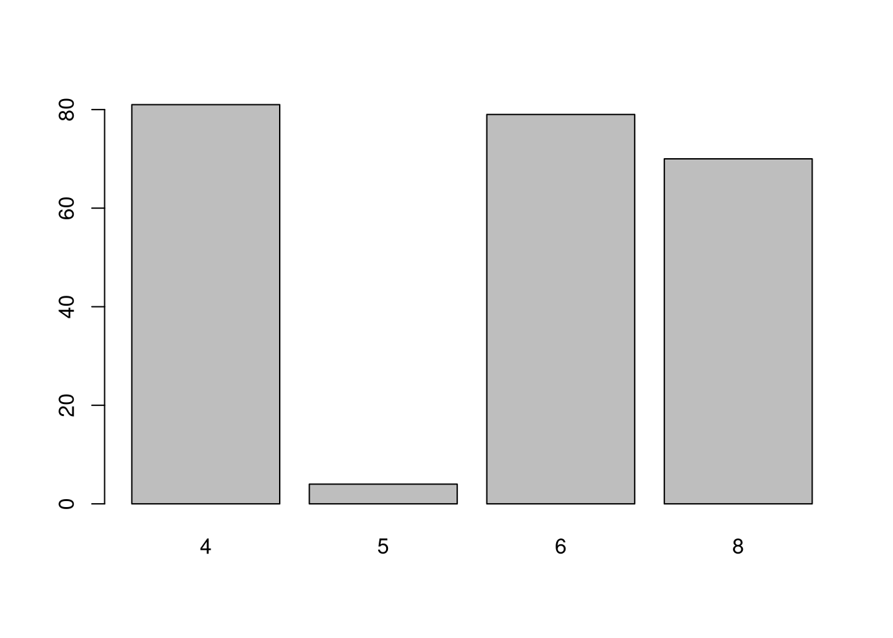
plot(x = mpg$displ, y = mpg$hwy,
xlab = "Highway mpg",
ylab = "Engine displacement (L)")
These plots are quick to produce and are useful for an initial understanding of the data, but the syntax used to create them is specific to the type of plot. In contrast, ggplot has a streamlined approach to plotting involving largely the same steps regardless of plot type. Specifically, in ggplot we build up visualisations layer by layer using the + operator (which is similar to the %>% operator we are already familiar with).
The main, important, layers in ggplot are:
- Pass the data to
ggplot() - Choose aesthetic mappings with
aes() - Choose geometric components with
geom() - Choose additional labels, themes, and visuals
- Choose faceting if it is applicable with
facet()
What does this layering system look like? In Chapter 3: Data Visualisation of Hadley Wickham’s R4DS book, there is a general ggplot template to give you an idea of how plots are layered.
```{r}
ggplot(data = <DATA>) +
<GEOM_FUNCTION>(
mapping = aes(<MAPPINGS>)) +
<COORDINATE_FUNCTION> +
<FACET_FUNCTION> +
<THEME>
```Below is a real example of how this looks. Remember that you do not have to / need to use all of the ggplot options (and there are many many more than presented here). However, this gives you an idea of how the layers of these plots are built up.
ggplot(iris) + # Data
geom_point(mapping = aes(x = Sepal.Length, # Variable on the x-axis
y = Sepal.Width, # Variable on the y-axis
colour = Species)) + # Legend
labs(x = "Sepal Length",
y = "Sepal Width",
title = "Relationship between Sepal Length and Width by Species") +
coord_cartesian() + # Default standard for mapping x and y
facet_wrap(~Species) + # Splits plot by the species variable
theme_bw() # Sets the background theme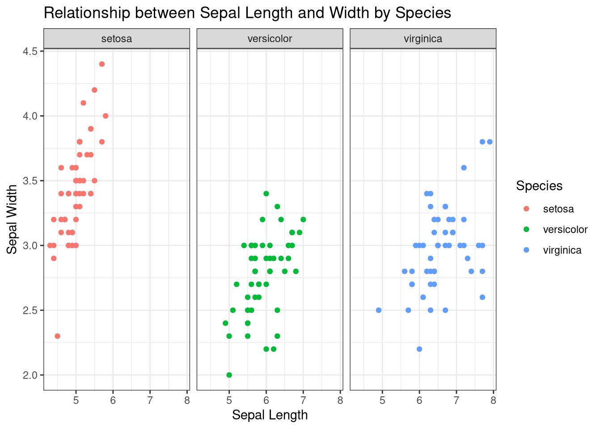
You can read about different ggplot2 options here. The reference guides by RPubs, STHDA and Data Novia will be useful once you grasp the basics and want to make more complicated visualisations.
Visualising distributions of single variables
Categorical variables
Bar charts are often used to visualise categorical variables with a finite set of values. Below is an example how to visuailse the distribution of drv - the type of drive train in the mpg dataset.
geom_bar transforms each value of drv into a count to be plotted on the y-axis. The x-axis presents the category associated with each count.
ggplot(mpg) +
geom_bar(aes(x = drv))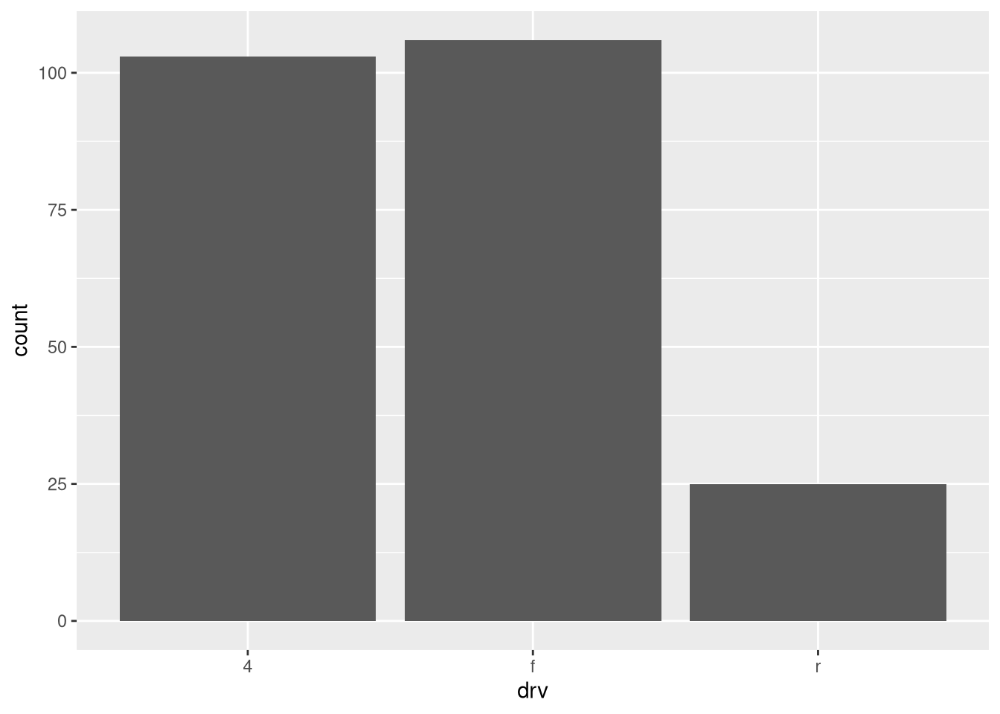
- Create a bar chart that shows a count for the different vehicle classes in
mpg.
ggplot(mpg) + # list the dataset
geom_bar(aes(x = class)) # geom_bar for a barplot, and the 'class' variable on the x-axis. 
# geom_bar adds counts on the y-axis by default- Look up different
ggplotthemes, and apply one to the bar chart you just created.
ggplot(mpg) +
geom_bar(aes(x = class)) +
theme_bw() # Here we add the theme
# There are different `ggplot` themes and the one you choose is largely down to personal preference, but you also want one that enhances your data visualisation. Here I choose `+ theme_bw()` but other examples include `+ theme_minimal()` and `+ theme_light()`.Continuous variables
Histograms are often used to visualise the distribution of a continuous variable. Below is an example of how to visualise the distribution of cty - the number of city miles per gallon in the mpg dataset.
geom_hist transforms the x-axis into equally spaced “bins” and the height of each bar on the y-axis is the number of observations falling in each bin.
ggplot(mpg) +
geom_histogram(aes(x = cty),
binwidth = 3)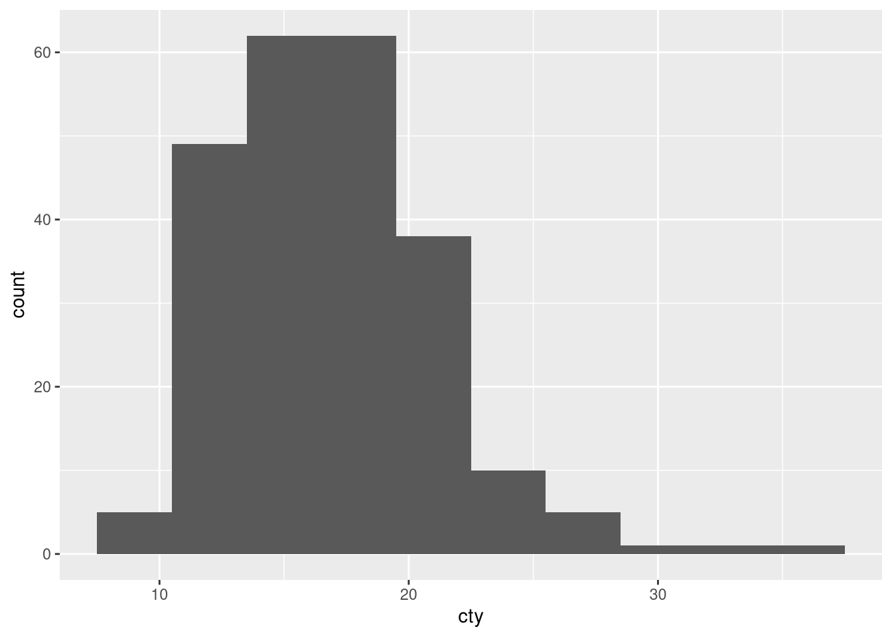
You can change the value of binwidth to adjust the width of the intervals. Different binwidths can reveal different patterns in the data.
- What happens when you change the value of
binwidthto1? Does the distribution change?
ggplot(mpg) +
geom_histogram(aes(x = cty),
binwidth = 1)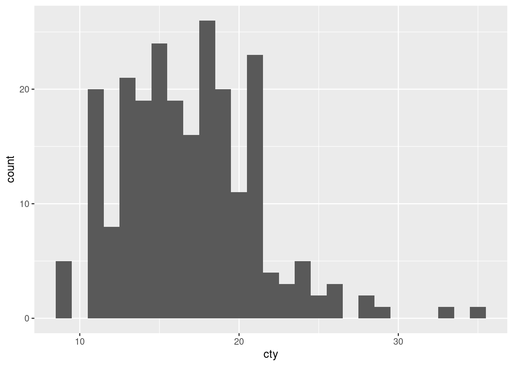
# The general distribution does not drastically change, but it is now much easier to spot outliers. Specifically, there are two extreme values to the right of the distribution where the city miles per gallon exceed 30 in a small number of cases.Density plots are an alternative to histograms for continuous data. Below is an example of the density of cty from the mpg data. The argument fill = "darkseagreen" just adds colour. You can also specify colour = "<COLOUR NAME>" to change the density line.
geom_density transforms the data into smoothed kernel density estimates (basically a smooth histogram). It is useful for continuous data that come from an underlying smooth distribution.
ggplot(mpg, aes(x = cty)) +
geom_density(fill = "darkseagreen") 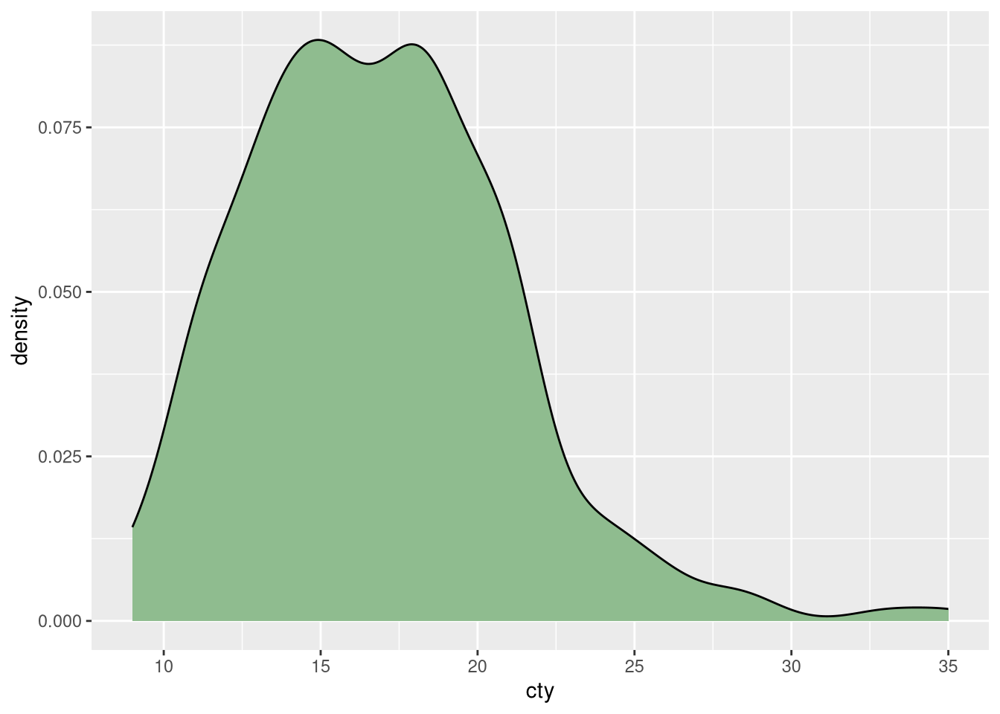
You can also include raw data in a histogram in the form of “rug” marks.
- Add rug marks to plot above by adding the argument
+ geom_rug(size = 1, colour = "darkorange").
ggplot(mpg, aes(x = cty)) +
geom_density(fill = "darkseagreen") +
geom_rug(size = 1,
colour = "darkorange")Warning: Using `size` aesthetic for lines was deprecated in ggplot2 3.4.0.
ℹ Please use `linewidth` instead.
Visualing the distributions of multiple variables
Continuous - Continuous
Scatterplots are often used to explore how two continuous variables covary together. Below is an example of how to visualise covariation between displ (engine displacement) and hwy (highway miles per gallon) in the mpg data. If there is a clear pattern in how the points fall on the x- and y-axes then we can say these variables covary.
geom_point plots values of displ on the y-axis and values of hwy on the x-axis.
ggplot(mpg) +
geom_point(aes(x = displ,
y = hwy))
Some of these values might be clustered together based on another characteristic. You can explore this by adding colour to the aesthetic mappings, for example.
ggplot(mpg) +
geom_point(aes(x = displ,
y = hwy,
colour = class))
- Repeat the plot above, but mapping the type of transmission to the
colouraesthetic. Add a theme and change the titles of the x- and y-axes.
ggplot(mpg) +
geom_point(aes(x = displ,
y = hwy,
colour = trans)) +
labs(x = "Engine Displacement (L)",
y = "Highway miles per gallon",) +
theme_bw()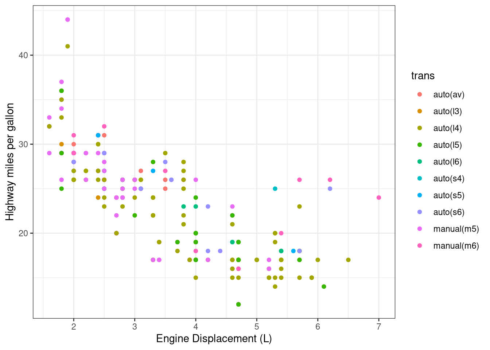
Different aesthetic mappings can be combined in one plot. For example, you may want to add a line of best fit to a scatterplot plot, which you can do using geom_smooth().
- Create a scatter plot showing the relationship between engine displacement and city miles, including a line of best fit.
ggplot(mpg, aes(x = displ,
y = hwy)) +
geom_point() +
geom_smooth() +
labs(x = "Engine Displacement (L)",
y = "Highway miles per gallon",) +
theme_bw()`geom_smooth()` using method = 'loess' and formula = 'y ~ x'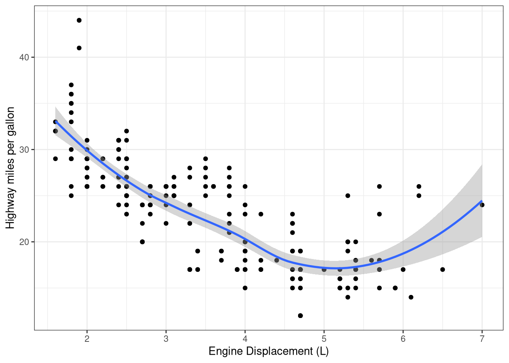
# `geom_smooth()` is used to add a line of best fit. The default method is "loess" with the formula x ~ y, but you can change this to any other method. For example, you can choose `method = "lm"` for a linear best fit line.You can fit more than one line in the same plot. This is often useful in multilevel modelling, where different hierarchies (e.g., groups, locations, individuals) have different slopes.
- Recreate the previous plot, but adding
colour = classto the aesthetic mappings. Usemethod = "lm"and setse = FALSEingeom_smooth(). What difference does this make?
ggplot(mpg, aes(x = displ,
y = hwy,
colour = class)) +
geom_point() +
geom_smooth(method = lm,
se = FALSE) +
labs(x = "Engine Displacement (L)",
y = "Highway miles per gallon",) +
theme_bw()`geom_smooth()` using formula = 'y ~ x'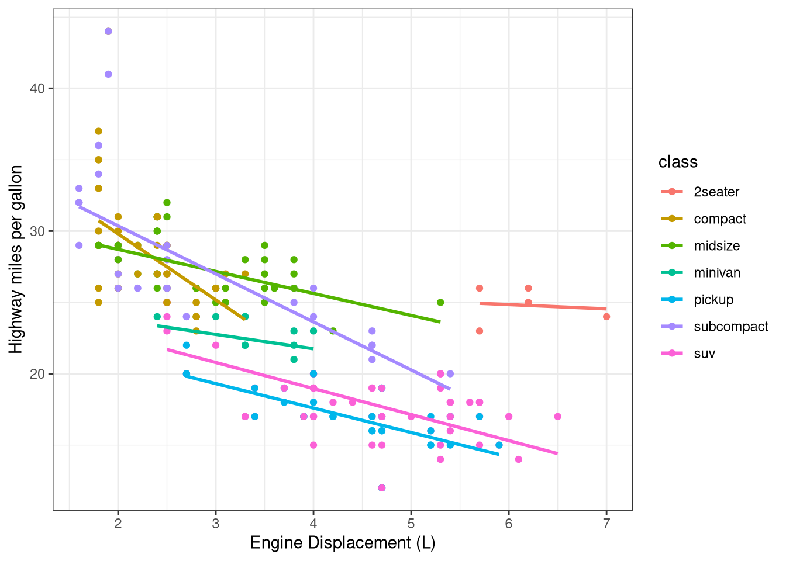
# Adding `colour = class` to the aesthetic mappings causes `geom_smooth()` to fit a line for each class of vehicle. Using `method = "lm"` with `se = FALSE` fits a linear line without the standard error. Dropping the standard error makes the plot more readable, since they are otherwise overlapping.Continuous - Categorical
Boxplots are often used to explore the distribution of a continuous variable broken down by a categorical variable. Below is an example of hwy broken down by drv.
geom_boxplot transforms the data to show summary statistics that are represented by the different visual features of the boxplot.
ggplot(mpg) +
geom_boxplot(aes(x = drv,
y = hwy))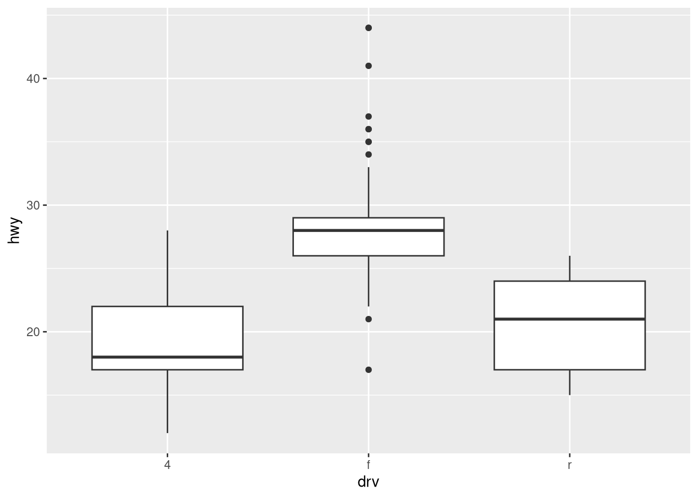
These features of the boxplot are:
- Lower horizontal line
- Thicker horizontal middle line
- Upper horizontal line
- Vertical whiskers
- Points beyond the whiskers
- What do each of these features tell us?
# Lower horizontal line -> 25th percentile
# Thicker horizontal middle line -> median
# Upper horizontal line -> 75th percentile
# Vertical whiskers -> IQR
# 1.5 Points beyond the whiskers -> OUTLIERS- Add
+ coord_flip()to the plot above. What does this do?
ggplot(mpg) +
geom_boxplot(aes(x = drv, y = hwy)) +
coord_flip()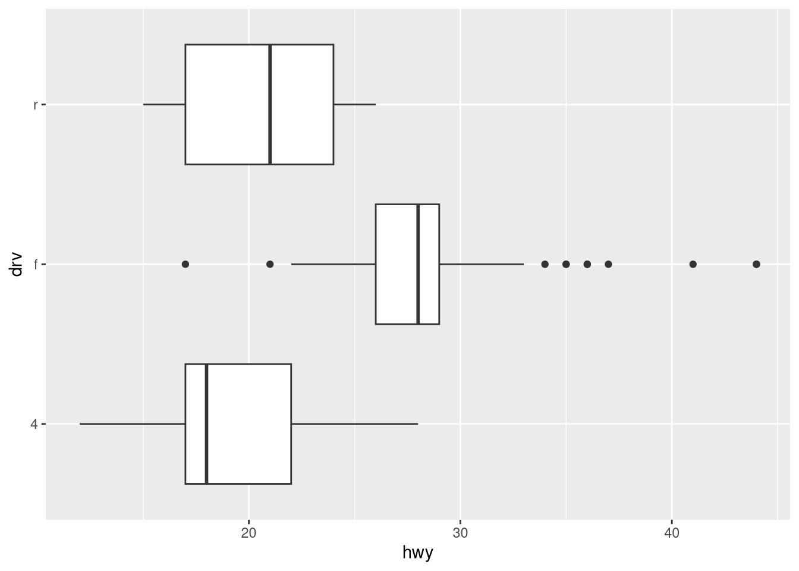
# coord_flip()` swaps the x- and y-axes.- What can you conclude about the highway miles per gallon of each type of drive train from the boxplot above?
# There are many outliers (points beyond the whiskers) for drive train type "f", which represents a front-wheel drive. There are no outliers beyond the IQR for the other types of drive train, 4-wheel drive and rear-wheel drive.The variable trans contains 10 different transmissions types. These 10 categories can be assumed under 2 broader categories: manual and auto.
- Use
mutate()andfct_collapse()to collapse the 10 categories oftransto just these 2 categories.
mpg <- mpg %>%
mutate(trans = fct_collapse(trans,
"auto" = c("auto(av)",
"auto(l3)",
"auto(l4)",
"auto(l5)",
"auto(l6)",
"auto(s4)",
"auto(s5)",
"auto(s6)"),
"manual" = c("manual(m5)",
"manual(m6)"))) - Use the previous example to create a boxplot mapping
ctyon the y-axis anddrvon the x-axis, this time adding the argumentcolour = transtoaes(). What has changed?
ggplot(mpg) +
geom_boxplot(aes(x = drv,
y = cty,
colour = trans))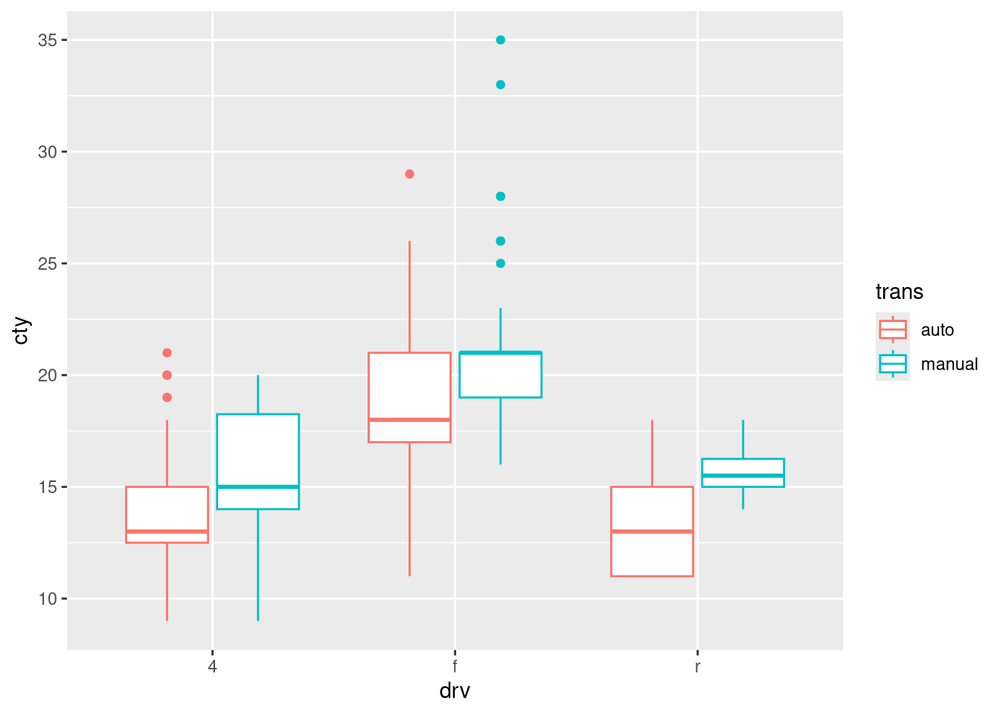
# Adding the argument `colour = trans` to the aesthetic mappings further splits the drive train into auto and manual.
# Note that you can also perform the above operations in one piped step.
mpg %>%
mutate(trans = fct_collapse(trans,
"auto" = c("auto(av)",
"auto(l3)",
"auto(l4)",
"auto(l5)",
"auto(l6)",
"auto(s4)",
"auto(s5)",
"auto(s6)"),
"manual" = c("manual(m5)",
"manual(m6)"))) %>%
ggplot() +
geom_boxplot(aes(x = drv,
y = cty,
colour = trans))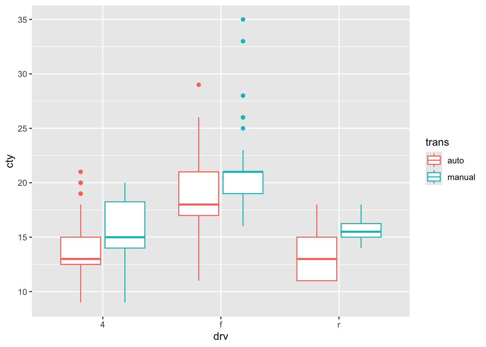
Facets
Facets are a way to split your plot into many subplots according to some categorical variable.
To do this, you use the command facet_wrap() to facet by a single variable. The first argument to facet_wrap() is a formula initiated by ~ and a variable name. Below is an example of how this can work on the mpg data.
ggplot(mpg) +
geom_point(aes(x = displ,
y = hwy)) +
facet_wrap(~ class, nrow = 2)
It is possible to facet on a combination of two variables using facet_grid(). Like before, the first argument is a formula, but containing two variable names separated by ~. Below is an example of how this can work.
ggplot(mpg) +
geom_point(aes(x = displ,
y = hwy)) +
facet_grid(drv ~ cyl)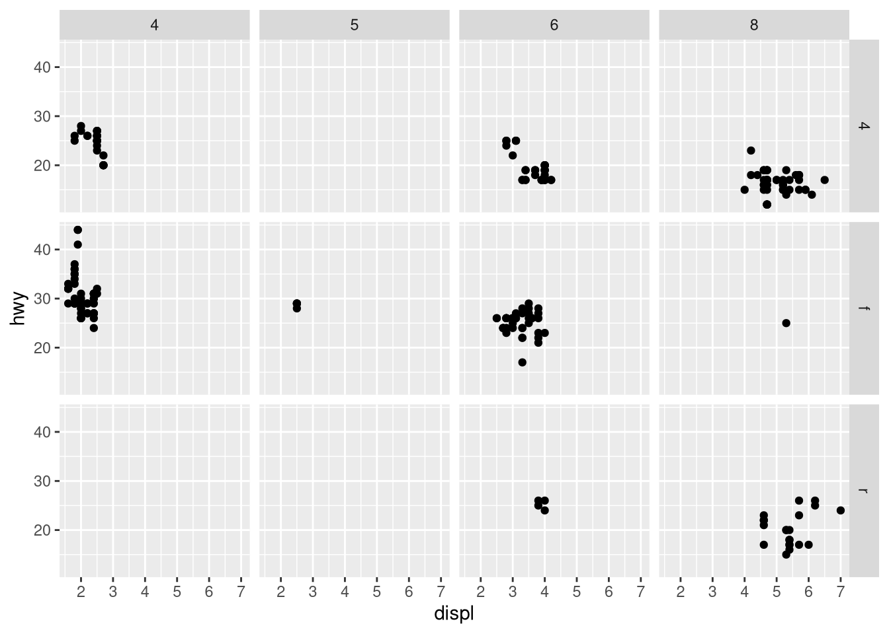
- Notice that there are empty cells in the bottom left facets above. What do you think this means?
# There are no rear-wheel drives that have 4 cyclinders, so there is nothing to plot here.- Create a scatter plot of
displandhwy, faceting by the ofmanufacturername.
ggplot(mpg) +
geom_point(aes(x = displ,
y = hwy)) +
facet_wrap(~manufacturer, nrow = 3)
- Change the names on the axes to be more informative.
ggplot(mpg) +
geom_point(aes(x = displ,
y = hwy)) +
labs(x = "Engine displacement (litres)",
y = "Highway miles per gallon") +
facet_wrap(~manufacturer, nrow = 3) 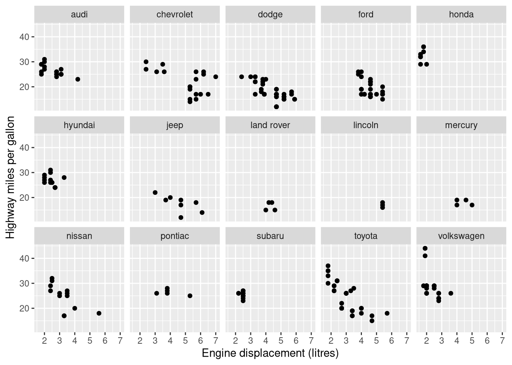
Arranging multiple plots
If you have multiple plots that you want to arrange on the same page, you can use ggarrange() from the ggpubr package.
The first step is creating some plots. For this exercise we will only use the variables hwy, cty, and class.
- Create the following three plots:
A. A bar plot showing counts of class, assigning class to the fill aesthetic.
B. A box plot of class by hwy per gallon, assigning class to the colour aesthetic.
C. A jittered scatterplot of hwy and cty miles per gallon, assigning class to the colour aesthetic.
Remember to save each plot as an object to be called upon later.
# plot A
p1 <- ggplot(data = mpg, aes(class, fill = class)) +
geom_bar() +
labs(x = "Vehicle class",
y = "Count") +
coord_flip() +
theme_bw()
# plot B
p2 <- ggplot(data = mpg) +
geom_boxplot(mapping = aes(x = class, y = hwy, colour = class)) +
labs(x = "Vehicle class",
y = "Highway mpg") +
coord_flip() +
theme_bw()
# plot C
p3 <- ggplot(data = mpg) +
geom_jitter(mapping = aes(x = cty, y = hwy, colour = class)) +
labs(x = "Vehicle class",
y = "Highway mpg") +
theme_bw()
# I create three plots names "p1", "p2", and "p3", using previous examples to guide me if necessary. For p1 and p2 I add `coord_flip()` to make the categories easier to read.D. Use ggarrange() to arrange the three plots in one space. ggarrange() takes the plots as arguments as well as ncol or nrow to customise the arrangement
ggarrange(p1, p2, p3,
ncol = 2,
nrow = 2)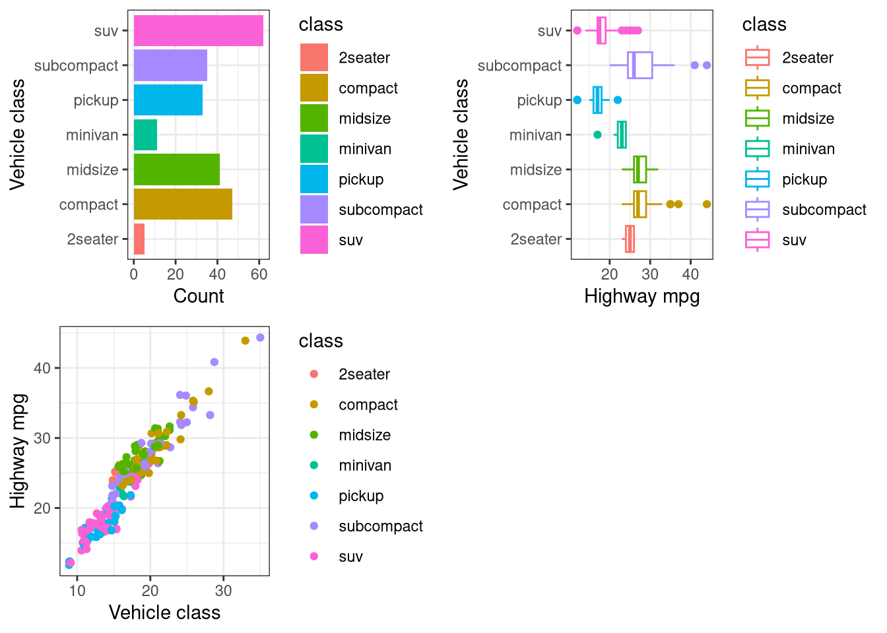
# The only necessary arguments are the plots, but specifying `ncol` and `nrow` can improve the appearance. the repetition of the legend is usually something we want to avoid.E. Repeat the code from the previous question, adding common.legend = TRUE and legend = "bottom" to ggarrange().
ggarrange(p1, p2, p3,
nrow = 2,
ncol = 2,
vjust = 0.5,
common.legend = TRUE,
legend = "bottom")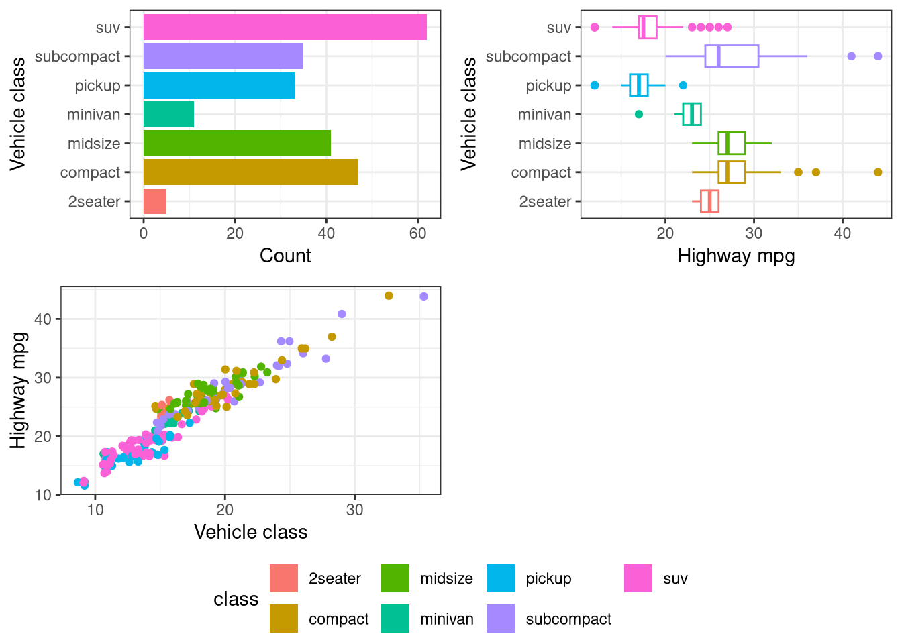
# Setting `common.legend = TRUE` gets rid of the repetitive legend and slightly improves the look. In this example I move the legend to the bottom position, but "top", "left", and "right" are other options.Part 2: Linear regression
We will use the following packages in this part of the practical:
library(dplyr)
library(magrittr)
library(ggplot2)
library(gridExtra)In this practical, you will learn how to perform regression analyses in R using lm() and inspect variables by plotting these variables, using ggplot(), repeating some topics of the last 3 weeks.
Loading the dataset
In the this practical, we will use the built-in data set iris. This data set contains the measurement of different iris species (flowers), you can find more information here.
- Load the dataset and explain what variables are measured in the first three columns of your data set.
data <- iris # load the data
head(iris) # inspect the data Sepal.Length Sepal.Width Petal.Length Petal.Width Species
1 5.1 3.5 1.4 0.2 setosa
2 4.9 3.0 1.4 0.2 setosa
3 4.7 3.2 1.3 0.2 setosa
4 4.6 3.1 1.5 0.2 setosa
5 5.0 3.6 1.4 0.2 setosa
6 5.4 3.9 1.7 0.4 setosa# The data set contains three different kinds of flowers. The petal leaves and sepal leaves are measured in length and width. All measurements are in centimeters.Inspecting the dataset
A good way of eyeballing on a relation between two continuous variables is by creating a scatterplot.
- Plot the sepal length and the petal width variables in a
ggplotscatter plot (geom_points)
ggplot(data) +
geom_point(aes(Sepal.Length, Petal.Width)) +
xlab("Sepal length (in cm)") +
ylab("Petal width (in cm)") +
labs(col = "Species") +
theme_minimal() +
ggtitle("Plot of 2 continous variables") +
theme(plot.title = element_text(hjust = 0.5))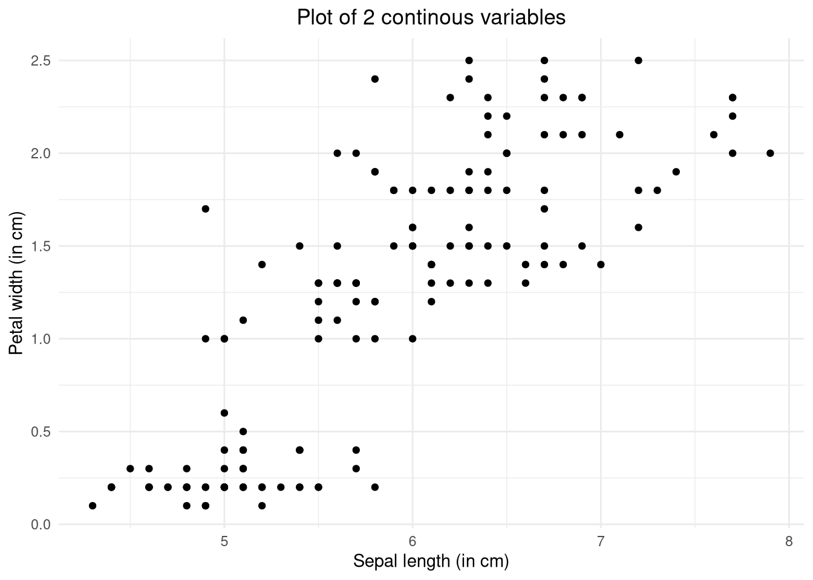
A loess curve can be added to the plot to get a general idea of the relation between the two variables. You can add a loess curve to a ggplot with stat_smooth(method = "loess").
- Add a loess curve to the plot under question 2, for further inspection.
ggplot(data, aes(x = Sepal.Length, y = Petal.Width)) +
geom_point() +
stat_smooth(method = "loess", se=F, col = "blue") +
xlab("Sepal length (in cm)") +
ylab("Petal width (in cm)") +
labs(col = "Species") +
theme_minimal() +
ggtitle("Plot of 2 continous variables") +
theme(plot.title = element_text(hjust = 0.5))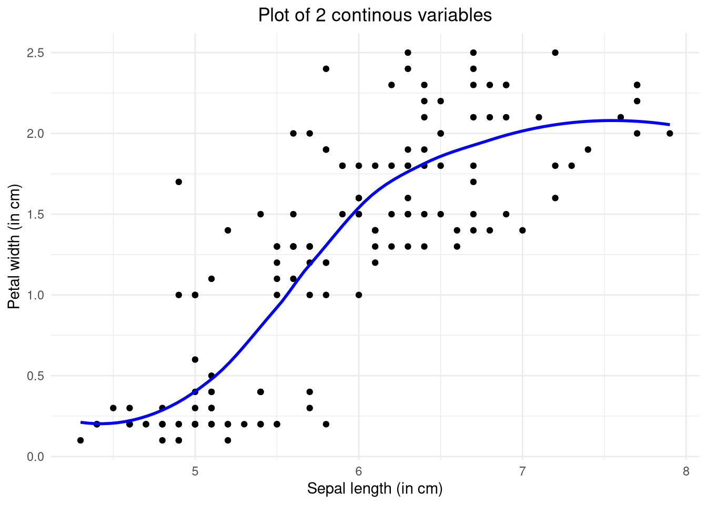
# The curve is added to the previous plot by the line `stat_smooth(method = "loess, se = F, col = "blue")`.To get a clearer idea of the general trend in the data (or of the relation), a regression line can be added to the plot. A regression line can be added in the same way as a loess curve, the method argument in the function needs to be altered to lm to do so.
- Change the loess curve of the previous plot to a regression line. Describe the relation that the line indicates.
# In comparison to the previous plot, we now adjust "method = "loess"" to "method = "lm"".
ggplot(data, aes(x = Sepal.Length, y = Petal.Width)) +
geom_point() +
stat_smooth(method = "lm", se=F, col = "blue") +
xlab("Sepal length (in cm)") +
ylab("Petal width (in cm)") +
labs(col = "Species") +
theme_minimal() +
ggtitle("Plot of 2 continous variables") +
theme(plot.title = element_text(hjust = 0.5))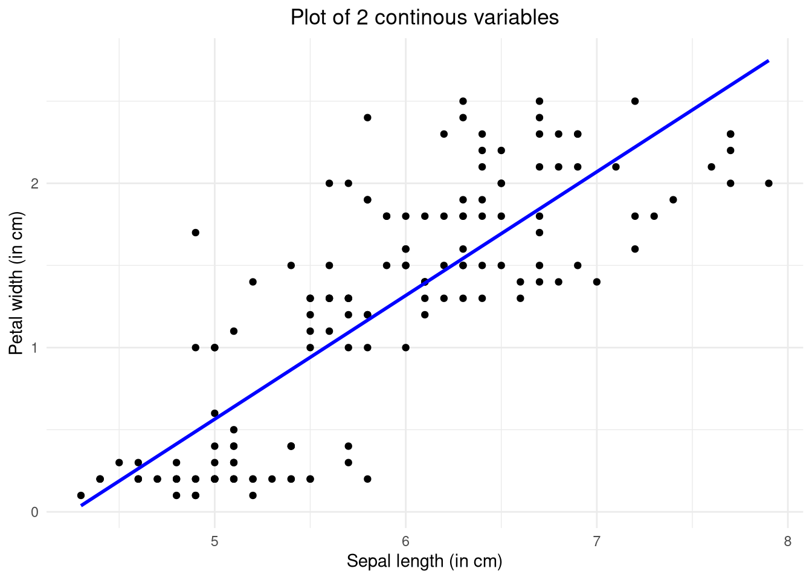
# The line indicates that there seems to be a more or less linear positive relation between the two plotted variables. This means that an increase in sepal length probably indicates an increase in petal width as well.Simple linear regression
With the lm() function, you can specify a linear regression model. You can save a model in an object and request summary statistics with the summary() command. The model is always specified with the code outcome_variable ~ predictor.
When a model is stored in an object, you can ask for the coefficients with coefficients(). The next code block shows how you would specify a model where petal width is predicted by sepal width, and how summary statistics for this model would look like
# Specify model: outcome = petal width, predictor = sepal width
iris_model1 <- lm(Petal.Width ~ Sepal.Width,
data = iris)
summary(iris_model1)
Call:
lm(formula = Petal.Width ~ Sepal.Width, data = iris)
Residuals:
Min 1Q Median 3Q Max
-1.38424 -0.60889 -0.03208 0.52691 1.64812
Coefficients:
Estimate Std. Error t value Pr(>|t|)
(Intercept) 3.1569 0.4131 7.642 2.47e-12 ***
Sepal.Width -0.6403 0.1338 -4.786 4.07e-06 ***
---
Signif. codes: 0 '***' 0.001 '**' 0.01 '*' 0.05 '.' 0.1 ' ' 1
Residual standard error: 0.7117 on 148 degrees of freedom
Multiple R-squared: 0.134, Adjusted R-squared: 0.1282
F-statistic: 22.91 on 1 and 148 DF, p-value: 4.073e-06The summary of the model provides:
The model formula;
Estimated coefficients (with standard errors and their significance tests);
Information on the residuals;
A general test for the significance of the model (F-test);
The (adjusted) R squared as a metric for model performance.
Individual elements can be extracted by calling specific model elements (e.g. iris_model1$coefficients).
- Specify a regression model where Sepal length is predicted by Petal width. Store this model as `model1. Supply summary statistics for this model.
# specify model
model1 <- lm(Sepal.Length ~ Petal.Width,
data = data)
# ask for summary
summary(model1)
Call:
lm(formula = Sepal.Length ~ Petal.Width, data = data)
Residuals:
Min 1Q Median 3Q Max
-1.38822 -0.29358 -0.04393 0.26429 1.34521
Coefficients:
Estimate Std. Error t value Pr(>|t|)
(Intercept) 4.77763 0.07293 65.51 <2e-16 ***
Petal.Width 0.88858 0.05137 17.30 <2e-16 ***
---
Signif. codes: 0 '***' 0.001 '**' 0.01 '*' 0.05 '.' 0.1 ' ' 1
Residual standard error: 0.478 on 148 degrees of freedom
Multiple R-squared: 0.669, Adjusted R-squared: 0.6668
F-statistic: 299.2 on 1 and 148 DF, p-value: < 2.2e-16- Based on the summary of the model, give a substantive interpretation of the regression coefficient.
# The regression coefficient indicates the amount of change in the predicted variable when the predictor variable is changed with one unit. In case of the example model, this means that for every centimeter increase in the width of a petal leaf, the predicted length of a sepal leaf increases by 0.89 cm.- Relate the summary statistics and coefficients to the plots you made in questions 2 - 4.
# The coefficients seem to be in accordance with the earlier plots. They are not exactly the same, but indicate a similar positive relationship.